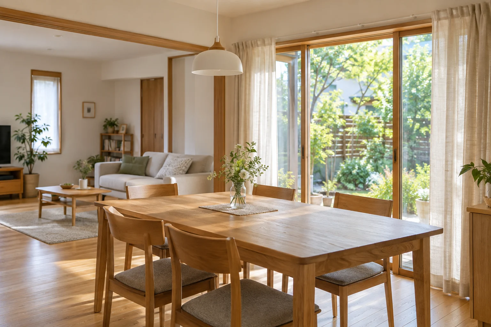

自分のペースを大切に
ひとりでゆっくり過ごす時間も尊重。ご本人の希望を聞きながら、心地よい暮らしを考えます。

住まいのイメージ凪（なぎ）は、障がいのある方が、地域のなかで自分らしく暮らすためのグループホームです。
大切にしているのは、暮らしのペースを無理に変えないこと。できることは自分で、困ったときは誰かといっしょに。日々の小さなやりとりを重ねながら、その人らしい毎日を支えていきます。
出会いを大切に。暮らしに、安心を。凪
落ち着ける自分の部屋と、
自然と顔を合わせる共有スペース。
静かな住宅街で、穏やかに過ごす毎日。
食事や会話を楽しみながら、自分の時間も大切にできる住まいです。
ひとりでゆっくり過ごす時間も尊重。ご本人の希望を聞きながら、心地よい暮らしを考えます。
食事や掃除、生活リズムのこと。必要なサポートを相談し、一つひとつ一緒に取り組みます。
日中の通所先やご家族、相談支援の方と連携し、暮らしの安心につなげていきます。
ご本人も、ご家族も、支援者の方も。
まずはお気軽にご相談ください。
障がいのある方で、日常生活に支援を受けながら地域での暮らしを希望される方を対象としています。必要な支援やご希望を伺い、個別にご相談いたします。
※ デザイン確認用の金額です。実際の費用・支援内容は未定です。サービス利用料や個人で使用するものの費用は別途となる場合があります。
暮らしの希望や気になることを、お聞かせください。
お部屋やホームの雰囲気を、実際にご覧いただきます。
必要な支援を相談しながら、入居に向けて準備します。
慣れるまでゆっくりと。新しい毎日を一緒に整えます。
はい。まずはホームの雰囲気を知るための見学でも構いません。ご家族や支援者の方と一緒の見学もご相談いただけます。
現在のお仕事や日中活動を大切にしながら暮らせるよう、ご希望や通所先との距離などを一緒に確認します。
食事や掃除などの日常生活の相談を想定しています。具体的な支援内容や職員体制は、準備が整い次第ご案内します。
ご状況に応じて必要なお手続きをご案内します。相談支援専門員の方がいらっしゃる場合は、一緒にご相談いただくとスムーズです。
グループホーム「凪」の運営法人は、
合同会社壱期です。
小さな疑問も、これからの暮らしのことも。
どうぞお気軽にお聞かせください。
ご本人・ご家族・支援者の方からの
ご相談を受け付けています。